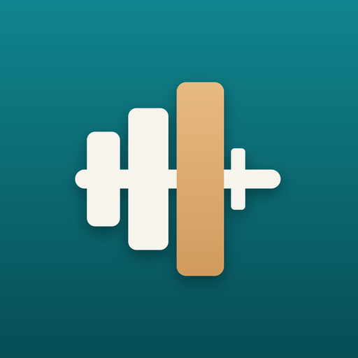

PlateLog is an offline workout tracker for Android. This policy explains what happens to the information you enter into it. The short version: your data stays on your device. PlateLog does not collect, transmit, sell or share any personal data.
Everything you enter is saved only in a local database on your phone. That includes workouts, sets, exercises, templates, body weight, body measurements, goals, reminders and settings. There is no account, no sign-in and no server. PlateLog does not request the Internet permission, so it has no way to send your data anywhere.
If you buy PlateLog Pro, the app also stores a single "Pro unlocked" flag on your device (see below).
PlateLog Pro is an optional one-time purchase. Everything you log, and every backup, stays free without it. The purchase is made through the Google Play Store app and processed entirely by Google under Google's Privacy Policy and the Google Play Terms of Service.
If you export your data (JSON, CSV or PDF), or turn on automatic backup, PlateLog writes files to your device's Downloads/PlateLog folder. What happens to those files afterwards, such as sharing them or copying them elsewhere, is up to you.
Like most Android apps, PlateLog takes part in Android's own device backup. If you have enabled backup in your phone's settings, Android may include the app's data in your personal device backup, which Google stores in your account under Google's Privacy Policy. PlateLog itself has no access to that backup. You can turn it off in your phone's settings.
These are used only on your device for these features.
You can erase everything with Settings → Clear All Data, or by uninstalling the app. Uninstalling removes the app's database and the "Pro unlocked" flag. Files you exported to Downloads stay there until you delete them. A Pro purchase stays with your Google account and can be restored after reinstalling.
PlateLog is not directed at children and collects no data from anyone.
If this policy changes, the updated version will be posted on this page with a new effective date.
Questions about this policy: open an issue on GitHub.